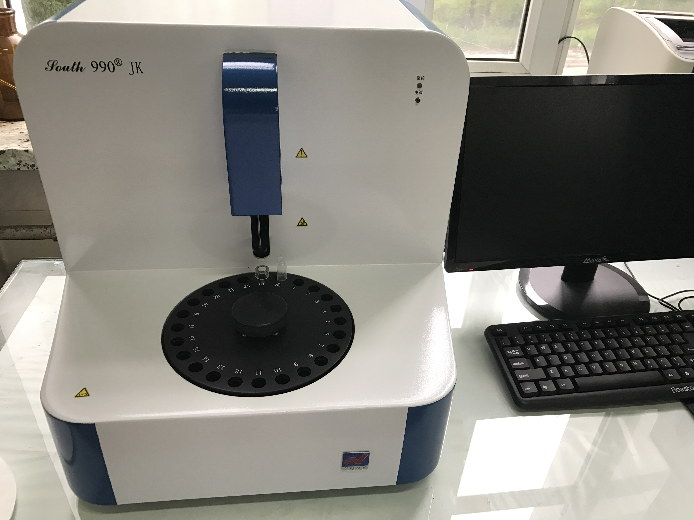
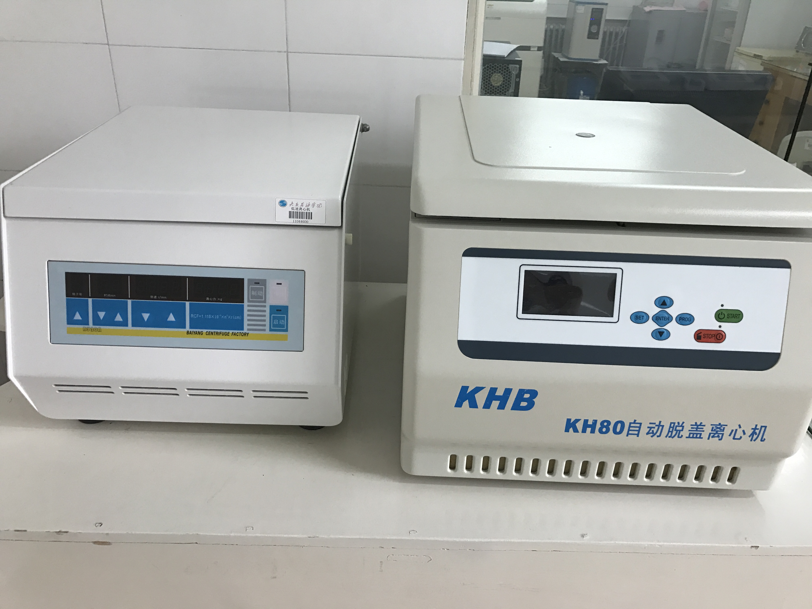
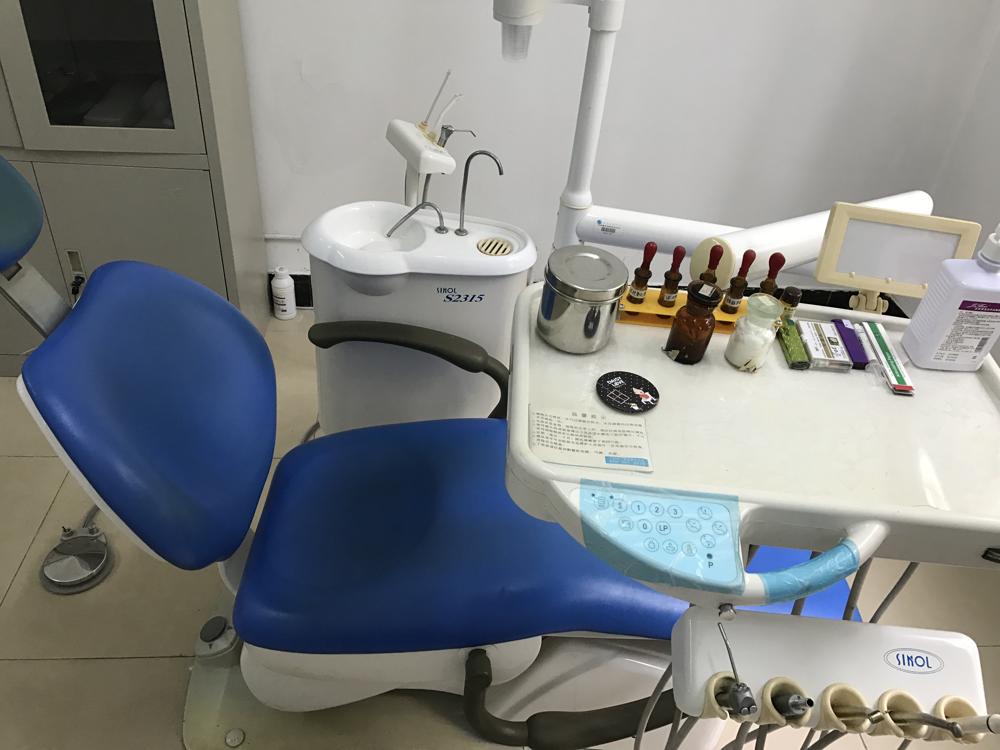

东北石油大学医院简介
东北石油大学医院是一所集医疗、预防、保健、健康教育、社区卫生服务等职能为一体的公立非营利性综合医院。
医院位于东北石油大学校区内，建筑面积约2500平方米。医院编制病床30张，科室有：内科、外科、妇儿、眼耳鼻喉、口腔、全科、中医、康复、预防保健、药房、放射、化验室、心电图室、B超室、手术室、护理组、计划生育、健康教育教研室等科室。
医院现有职工41人，正式职工31人，合同制临时工10人。其中正高级职称3人，副高级职称7人，医学硕士学位3人；执业医师15人，执业药师2人，执业护士9人。是大庆市医疗保险定点机构，承担着校内2万多名师生员工、家属以及周边1万多居民的医疗保健工作，具有临床各科常见病、多发病的诊断和治疗能力，并对学苑小区及周边居民提供多方位的社区公共卫生服务。 
医院新引进的设备有迈瑞DC-3全数字超声诊断系统；12导数字式心电图机；东软NSX-RF3900多功能数字X线机、原装进口富士医用干式激光相机；KHB L3180半自动血液生化分析仪、原装进口全自动血细胞分析仪及全自动血液粘度动态分析仪等。
咨询电话包括：
档案建立更新咨询：6503736；
预防接种：6504644；
护士站：6503600；
计划生育指导：6503435；
口腔科、外科：6503434；
慢病咨询：6503736；
健康教育：6504781；
妇幼保健及突发公共卫生事件：6504644；
投诉电话：6504789
东北石油大学校医院竭诚为您的健康保驾护航！